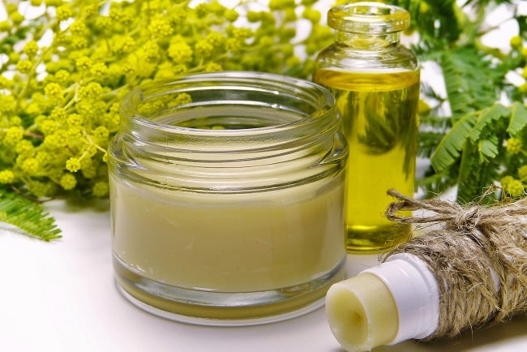
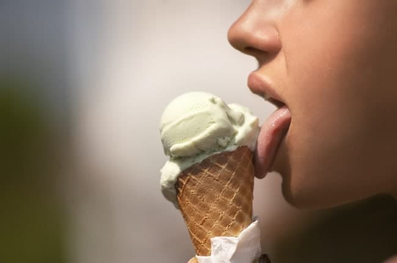
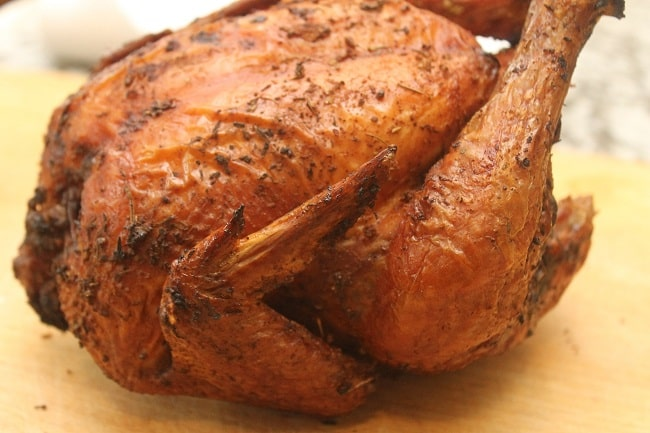

Le CBD est partout
un marché en pleine expansion
Le marché du CBD c’est une entreprise très lucrative. En 2018, elle pesait 600 millions de dollars aux Etats-Unis, un des premiers pays à avoir popularisé l’utilisation du CBD. Et ce chiffre pourrait bien exploser dans les années à venir. Le marché mondial du CBD représenterait actuellement 134 milliards d’euros. Le CBD est partout. Cigarettes électroniques, cristaux, fleurs, de nombreux produits à base de CBD sont d’ores et déjà disponibles.
Leur succès donne des envies et des idées à plusieurs entreprises à l’échelle mondiale. Une chose est sûre, les industriels ne sont pas en panne d’idées quand il s’agit de prendre des parts dans un marché fructueux. Et croyez-nous, les idées sont parfois… saugrenues.
Alors aujourd’hui on dresse avec vous le top 6 des plus gros coups marketing des industriels dans le marché du CBD.
les produits cosmétiques
On pourrait croire que le marché de la cosmétique à base de CBD est récent. Il n’en est rien. La célèbre marque The Body Shop lançait déjà en 1992 sa première gamme de cosmétique à destination des peaux sèches à base de chanvre. La crème pour les mains de cette gamme fait partie aujourd’hui des meilleures ventes de l’entreprise, notamment grâce à une efficacité qui a su faire ses preuves. En effet l’huile de chanvre est obtenue à partir des graines de chanvre pressées à froid. Riche en oméga 3 et 6, les propriétés hydratantes de l’huile de chanvre sont étonnantes.
Si The Body Shop faisait preuve d’innovation à l’époque en utilisant du chanvre dans ses produits et en affichant une feuille de cannabis sur les packagings des produits, c’est aujourd’hui de plus en plus courant. L’industrie cosmétique s’est saisie de la tendance et le CBD est partout : huile, crème pour le corps mais aussi dentifrice et même mascara. L’image de la feuille de cannabis est utilisée à tord et à travers, sans doute pour afficher la tendance « borderline » de ces produits. Pourtant pour rappel, le CBD n’ayant aucun usage récréatif, il n’y a aucun risque de finir « stone » en appliquant son mascara à base de CBD. Néanmoins l’image sulfureuse de la feuille de chanvre n’est pas là par hasard et cela semble booster les ventes.
La marque ayant poussé au plus loin l’équivoque de la feuille de cannabis est sous doute Horace, une marque de cosmétiques pour les hommes. Le 20 avril, journée mondiale de sensibilisation au cannabis, leur gamme de gel douche à base de cannabis bien que garantie sans THC, a été commercialisée avec un paquet de feuilles à rouler à base de chanvre bio non blanchi qui est en fait … un papier matifiant pour la peau. Car comme le précise la marque Horace : « bien entendu, il ne se fume pas. C’est un gel douche ». Un très bon coup marketing qui a fait parler de cette toute jeune marque et qui a fait grand bruit sur la toile.
les produits vétérinaires
Les effets bénéfiques du CBD sur les êtres humains ne sont plus à prouver et les chercheurs découvrent de nouveaux champs d’application très régulièrement. En revanche, ce que l’on sait moins, c’est que le CBD est aussi très efficace sur nos animaux de compagnie.
En effet, chats et chiens seraient très sensibles à la molécule de CBD, agissant sur le système endocannabinoïde, répartis dans le système nerveux. Plusieurs études américaines ont d’ailleurs démontré les effets positifs du CBD sur les infections, le stress, les indigestions, les problèmes de peau et les douleurs chez nos amis à quatre pattes. La prise de CBD chez les animaux domestiques peut les aider à retrouver le sommeil, leur donner plus d’énergie, plus d’appétit ou encore éviter les problèmes gastro-intestinaux très courants chez les chiens par exemple. Evidemment, la prise de CBD ne peut pas s’apparenter à la prise de médicaments. Demandez toujours l’avis de votre vétérinaire. Le CBD peut être en revanche un bon complément à des traitements médicamenteux.
un hamburger au CBD
A l’heure actuelle, de nombreux industriels de l’industrie agro-alimentaire ont bien senti que le CBD était un bon filon. Dès lors, de nombreux produits alimentaires à base de CBD voient le jour. Le CBD est partout et même dans vos burgers !
Le 20 avril 2019, la chaîne de restaurants américains Carl’s Jr propose un hamburger servi avec une sauce « infusée » au CBD, une recette tenue secrète. Ce burger d’exception appelé « Rocky Mountain High » ne sera servi que dans une seule enseigne de la chaine de fast-food à Denver dans le Colorado, et uniquement aux majeurs de plus de 21 ans. Notons que l’usage du cannabis récréatif est légal dans cet état du centre des Etats-Unis. Il est d’ailleurs le premier à l’avoir légalisé en 2014.
Sorti à l’occasion de la journée mondiale de sensibilisation au cannabis (le 20 avril), il vous en coûtera 4 dollars et 20 cents pour déguster le burger au CBD. Ce prix est un petit clin d’œil aux années de la contre-culture américaine, moment où les lycéens de Californie se retrouvaient à 4h20 de l’après-midi pour fumer ensemble. C’est cette anecdote qui a donné l’expression « code 420 », en référence à la consommation de cannabis.
les crèmes glacées
La célèbre entreprise de glace américaine Ben & Jerry’s n’est pas en reste quand il s’agit de surfer sur la tendance. Ce fut une des premières à commercialiser une glace vegan, comprenant que le marché vegan connaissait un essor fulgurant. Après ce succès, l’objectif était clair : proposer toujours des glaces plus tendances et novatrices.
Reconnu pour ses parfums gourmands comme le célèbre Cookie Dought, une des meilleures ventes du groupe, Ben & Jerry’s a toujours pris des positions très claires sur le plan politique. Affichant son soutien au mouvement « Occupy Wall Street » et militant en faveur du mariage homosexuel, c’est aujourd’hui une prise de position en faveur du CBD que la multinationale affiche. C’est la première entreprise à créer une glace au cannabidiol, militant pour l’autorisation alimentaire de cette substance issue du cannabis. Ce parfum sortira aux Etats-Unis après l’approbation de la FDA (US Food and Drug Administration). Peut-être l’occasion pour vous de pouvoir commander cet été à votre glacier un cornet chocolat, CBD ?
les biscuits du goûter de vos enfants
Dans l’industrie agro-alimentaire, Mondelēz fait figure de géant. Propriétaire des marques Oreo, Cadbury, Côte d’or ou encore Milka, Mondelēz est particulièrement influent dans le domaine des biscuits et des sucreries. Le chiffre d’affaire du groupe est conséquent mais les nombreuses controverses autour de cette industrie ont aussi affaibli les ventes. Le géant à donc décidé de frapper fort et d’aller là où on ne l’attend pas : dans le secteur du CBD. Ainsi en 2019, Mondelēz évoque son intention de lancer une gamme de biscuits anti-stress, infusés au CBD, en complément de sa gamme Oreo. Cette annonce n’a pas été sans susciter de grandes réactions, notamment de la part de parents choqués qu’une entreprise qui produit essentiellement une gamme pour enfant se lance dans une gamme de space cake plus que critiquable, par appât du gain.
Le CBD est partout et même dans votre poulet rôti
C’est notre numéro 1 de ce top 6 sur les plus gros coups marketing à base de CBD et c’est encore pour un usage alimentaire : le poulet !
Betty Fraser et Denise DeCarlo, propriétaires des restaurants Grub en Californie ont lancé en 2018 une « Fried Chiken Party », comprenez une fête à base de poulet frit. La petite particularité de ce poulet ? Il est infusé au CBD. Cette idée vient du chef Betty Fraser, grande défenseuse du cannabis comme elle le dit elle-même. Le but de cette soirée ? Profiter d’un délicieux poulet et sensibiliser les clients aux bénéfices du cannabis. A notre avis c’est aussi une soirée qui a été très lucrative, attirant les curieux et les initiés.
Et vous, si vous pouviez ajouter du CBD dans un produit du quotidien, ce serait dans quoi ?